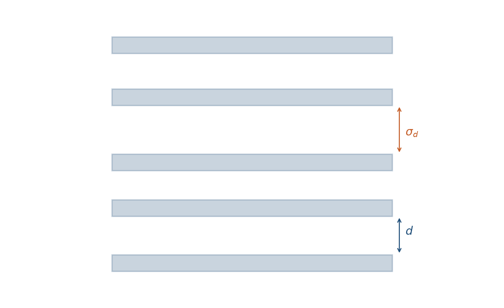
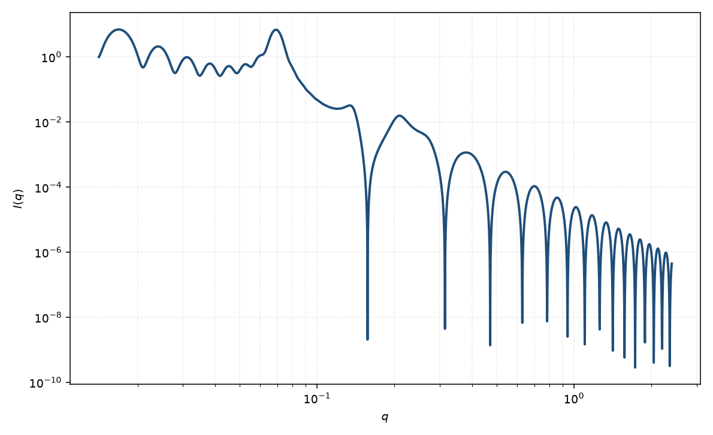

准晶层状堆叠
lamellar stack paracrystal
适用场景
层状堆叠的无序主要是相邻间距的累积涨落（Hosemann 一维准晶），而不是膜的长波弯曲时，用准晶格子因子乘以无限片形式因子。典型对象：较刚性的多层、聚合物片晶堆叠、以及间距无序明显、峰形接近高斯加宽而非幂律尾的体系。
柔性溶致膜、脂质 $L_\alpha$ 相的高分辨峰尾通常更符合 Caille，而不是本模型。横向有限的盘堆叠用堆叠圆盘。三维立方/六方准晶格子不在本页。
物理图像
Hosemann 把层心写成一维准晶：相邻间距独立高斯涨落 $\sigma_d$，第 $k$ 邻的相位方差按 $k$ 累积。干涉函数的高阶峰按 $\exp(-k q^2\sigma_d^2/2)$ 衰减，峰形近 Lorentz / 高斯混合，没有 Caille 的 $|q-q_n|^{\eta-2}$ 尾。
粉末平均仍乘 $2\pi/(q^2 d)$。单层可用矩形厚度剖面。$d$ 由峰位定，$\sigma_d$ 由高阶峰消失的速度定，$N$ 由一级峰宽定。Zhang 等指出，脂质双层的高分辨 SAXS 更支持修正 Caille 而非准晶。
示意图


核心公式
有限 $N$ 层、高斯间距涨落 $\sigma_d$ 的格子因子
$$S(q)=1+\frac{2}{N}\sum_{k=1}^{N-1}(N-k)\cos(kqd)\,\mathrm{e}^{-k q^2\sigma_d^2/2}.$$无限堆叠极限可写成 $g=\mathrm{e}^{-q^2\sigma_d^2/2}$ 的闭式 $(1-g^2)/(1-2g\cos(qd)+g^2)$。粉末强度
$$I(q)=\frac{2\pi}{d q^2}\,P_{\mathrm{t}}(q)\,S(q)+B,$$其中 $P_{\mathrm{t}}$ 与层状页相同。相对无序 $\sigma_d/d$ 通常只有百分之几到十几。
参数表
| 参数 | 符号 | 含义 | 单位 | 典型范围 |
|---|---|---|---|---|
| 层间距 | $d$ | 平均重复周期 | Å | 大于单层厚度 |
| 间距涨落 | $\sigma_d$ | 相邻间距的高斯宽度 | Å | $0$–$0.2d$ |
| 畴内层数 | $N$ | 相干堆叠片数 | — | 3–80 |
| 片层厚度 | $t$ | 单层矩形剖面 | Å | 10–80 Å |
| 极角 / 方位角 | $\theta,\phi$ | 层法向（二维） | 度 | 取向样品才独立 |
| 标度 / 本底 | $\mathrm{scale}$, $B$ | 前置因子与常数本底 | 与强度单位一致 | 实验相关 |
拟合注意
取向：粉末平均加宽层状峰；二维弧向收窄说明堆叠轴取向。畴大小 $N$ 与 $\sigma_d$ 都加宽一级峰：优先用峰位定 $d$，用高阶峰是否存在约束 $\sigma_d$，再用峰宽估 $N$。
$\sigma_d$ 与仪器分辨率强相关，方式类似 Caille $\eta$：低分辨会把 smearing 当成更大的间距无序。不要在未卷积分辨率时解释 $\sigma_d$。柔性膜的幂律尾用准晶拟合会系统低估高阶 $|F|$（Zhang 等）。
多分散：厚度分布改 $P_{\mathrm{t}}$；与 $\sigma_d$ 正交。磁性：磁通道共用 $d,\sigma_d,N$，剖面用磁厚度。可辨识性：只有一级宽峰时，$N$、$\sigma_d$ 与分辨率共线，应改报 $d$ 与一个有效峰宽，而不是三个独立数。
相近模型
- Caille 层状堆叠 — 热弯曲起伏与幂律峰尾。
- 层状 — 无层间干涉。
- 堆叠圆盘 — 有限半径，同样可用一维准晶干涉。
参考文献
- Hosemann, R.; Bagchi, S. N. Direct Analysis of Diffraction by Matter. North-Holland: Amsterdam, 1962.
- Zhang, R.; Tristram-Nagle, S.; Sun, W.; Headrick, R. L.; Irving, T. C.; Suter, R. M.; Nagle, J. F. Small-angle x-ray scattering from lipid bilayers is well described by modified Caillé theory but not by paracrystalline theory. Biophys. J. 1996, 70, 349–357. DOI: 10.1016/S0006-3495(96)79576-0
- Guinier, A.; Fournet, G. Small-Angle Scattering of X-rays. Wiley: New York, 1955.